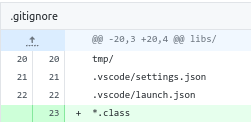

Author: Benjamin Van Renterghem @ construct0 FV
Date: 30/09/2024
Last updated: 30/09/2024
Nyzo version 645 (commits on construct0's GitHub) introduces updates to domain references, a new offset build throttling preference flag, expansion of the working scope of the TransactionSearchCommand, addition of the BlockSearchCommand, and removal of v644 pathway overhead within construct0's nyzoVerifier repository.
This version affects the Verifier, Sentinel and Client run modes.
Subversion 4 is the final subversion and concludes the release of this major version release.
The codebase contains references to the defunct nyzo.co web domain, these are updated to the nyzo.org domain (disclosure: owned and managed by construct0) in order to replace dead informational links & to restore functionality in regards to programmatical calls made for seed transactions and (genesis) block files.
The trusted_entry_points have not been modified in this version.
In addition to that the .gitignore file was updated to explicitly exclude files ending with the class extension from being included in the git repository. Depending on the working environment of the developer these are created upon building the project & are not desired to be included in commits made to the repository.
Informational references in the README were updated to point to the equivalent tech.nyzo.org links.
An additional function was added to the Block class which provides more information than the existing toString function. This function is put into use in a subversion 4 of this major version release.
The functional reference to the block files directory on the nyzo.co domain was updated to point to the equivalent blocks.nyzo.org domain.
The functional reference to the seed transactions directory on the nyzo.co domain was updated to point to the equivalent seed.nyzo.org domain.
The functional reference to the genesis block file was updated to reflect the file and directory structure present on the seed.nyzo.org domain. Additional logging statements were added.
The functional reference to the client on the nyzo.co domain was updated to point to a v643.x client hosted on the client0.nyzo.org domain.
The informational reference to the documentation server on the nyzo.co domain was updated to point to the equivalent tech.nyzo.org domain.
The Client uses the historical block manager to build offset files for consolidated block files. As currently implemented an offset file is built every 5 minutes. Should the client be equipped with the entire history of the blockchain and building offset files for the entire history is desirable this would take at least 81 days at a hypothetical block height of 23500000.
A preference flag was added which allows the node operator to disable throttling. The default behavior is unchanged, disabling throttling requires the node operator to specify the preference flag (with value 0 or false).
The inline PreferencesUtil call has been moved to the static "startManager" property, improving readability. Logging statements were added.
The Client's TransactionSearchCommand allowed for the retrieval of transactions for which the block height was equal to or exceeding the retention edge height. This limitation was removed and the command now makes several attempts to retrieve the associated block from on-disk storage using existing functionalities in the codebase.
Should the block not be present in memory or no offset file exists, an attempt is made to unpack an existing consolidated file, writing its contents as individual block files to disk in the process. If the block file consolidator consolidates individual block files these will be consolidated again in the future, if not they will linger on the system.
The accessibility modifier of an existing function within the BlockManager class was changed to allow for the TransactionSearchCommand to call it. As mentioned previously, this writes individual block files to disk.
In order to provide more utility to the Client & increase the ability to gain insight into the history of the blockchain, a new command is added. Given a block height, a search for the block is performed & an attempt is made to calculate the cycle length (which requires additional blocks prior to the block to exist on-disk).
Shown below are the type definition within the client commands' namespace, necessary imports & defining of calling and argument descriptors.
Defining operational conditions, parsing of the provided value as the block height, creating the table & defining its headers, and performing a search for the block akin to how a block is retrieved in the TransactionSearchCommand, are shown below.
"Long running" is set to false, worthy of mentioning is that calculating the cycle length for the block requires a non-negligible amount of system resources should the cycle length be of considerable size. During testing in isolation the time required to calculate the cycle length did not indicate the need for marking the command as long running.
If the block is found, the cycle information is requested using a new overloaded variant (explained below) of the getCycleInformation method residing in the Block class. As mentioned previously, this requires a non-negligible amount of system resources and is thus planned for improvement post-release of cycle digest related facilities. Should this be a source of concern in the interim, a public facing client could prevent inclusion of the BlockSearchCommand to the web API by setting long running to "true".
If the cycle information (and thus length) can not be calculated a notice is added and a value of -1 is set.
The result is added to the table and returned.
The command is added to the CommandManager, effectively adding it to the CLI, web & API interfaces.
The existing getCycleInformation method of the Block class is overloaded. Existing calls to the variant of getCycleInformation void of any arguments now adopt the implied value of "false" for the "eager" argument.
The new overload of getCycleInformation accepts an "eager"-ness value from the aforementioned variant & from within the BlockSearchCommand. This method acts as a passthrough for this value.
The signature of the private method calculateCycleInformation of the Block class has been modified to receive the "eager" boolean. The only location from which calculateCycleInformation is currently called is from getCycleInformation.
The behavior of calculateCycleInformation remains the same for the case where "eager" equals "false" (which is for all existing calls due to the aforementioned overload). Should a request for "eager" block retrieval be received ("true"), block retrieval logic similar to the logic within modified TransactionSearchCommand and/or new BlockSearchCommand is performed, offering a greater chance for iterative continuation and thus eventual resolving of the CycleInformation for this block.
Nodes which have adopted v644 use two additional logical pathways (of which atleast one must resolve to true) to determine whether a gradually descending amount of block votes below the 75% enforced by nodes predating v644 (bottoming out at the current cycle length + 1, divided by 2) is sufficient in order to freeze a block.
Once the datetime based pathway indicated acceptability & the minimum amount of block votes were present beyond that point in time, adopters produced 4 additional blocks leveraging the more lenient (and most accurate with the Sybil attack theory in mind) required amount of block votes; leading to an effective softfork for these adopters (which can be interpreted as a "marginal" share of nodes in relation to the cycle length as per block height 23530693 - if you put aside that the majority of the nodes agreed on this by casting a block vote, and 4 nodes sequentially agreed to produce a block under these terms).
Due to these events, none of the pathway logic & associated version request fetching is relevant anymore and is removed from the codebase. The version related type definitions remain present; they do not pose strain in regards to readability & interpretability.
The more lenient amount of block votes required - which led to 4 blocks being produced - remains in effect.
The new toStringVerbose method of the Block class, introduced in subversion 0, was put into use when fetching the genesis block.